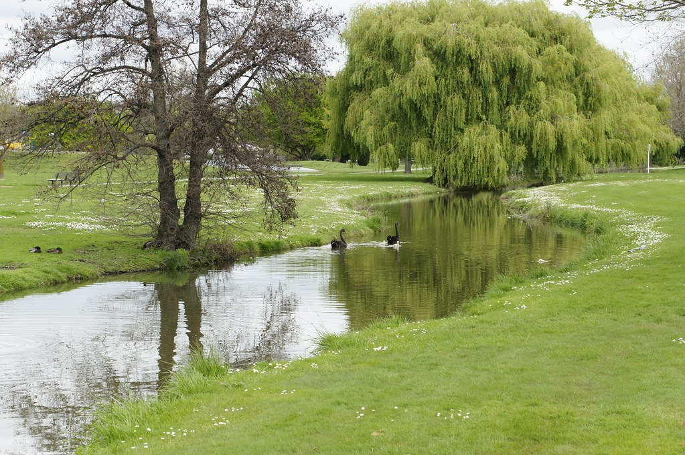

Anderson Park
Anderson Park is a free to use city park with an open field and a walking track. There are both leashed and off-leash areas. There is local wildlife so caution must be taken with your dog off-leash.